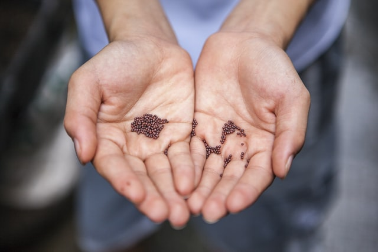
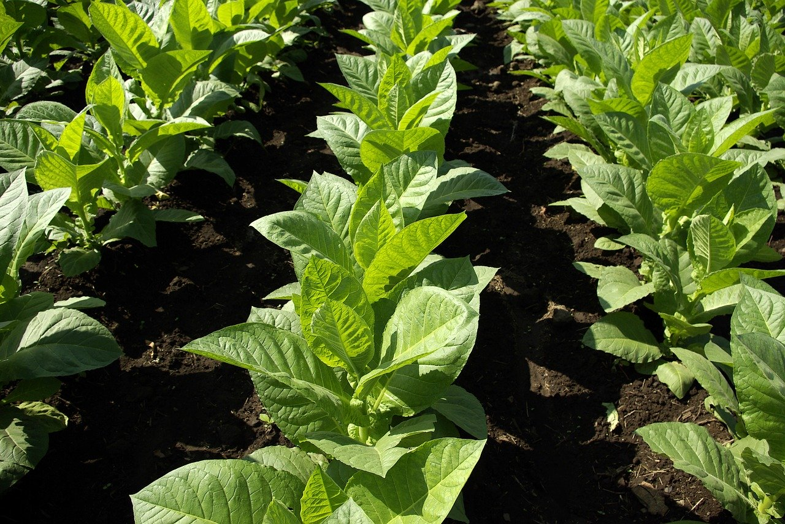
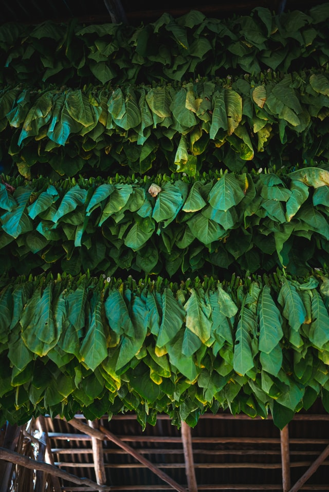
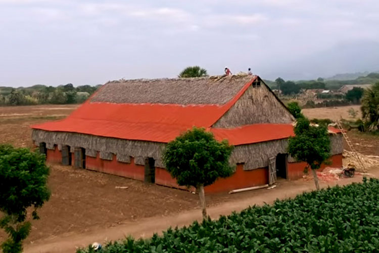
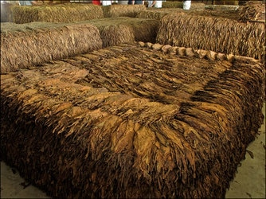
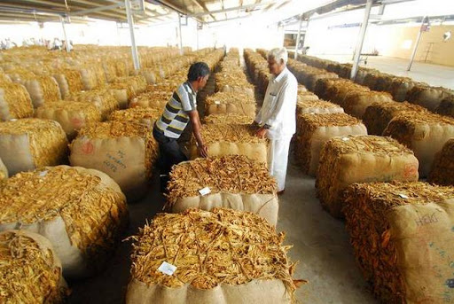
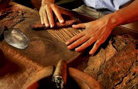
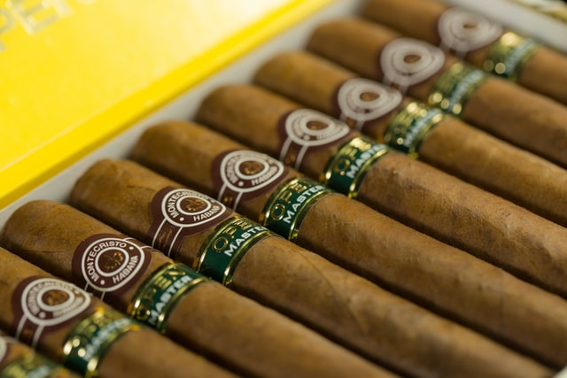

We have a small list of some of the more popular cigar producing countries and their factories.
Of course, there a so many more but these are the most popular around the world.
Cuba
Cohiba
Montecristo
Partagas
Domininca Republic
La Flor Dominicana
E.P Carillo
Arturo Fuente
Nicaragua
Drew Estate
Joya De Nicaragua
My Father Cigars
Cigar Journey
Learn about the journey of a cigar from seed to cigar here. Click on each
tab below to learn the stages of a cigars life.

Cigar tobacco begins as a seed, a tiny object the size of a candy sprinkle. The seeds are so
small that they need to be pelletized, coated with an inert substance such as clay for easier
handling. (The coating melts away when watered.) Many tobacco growers get their seeds by
selecting their heartiest plants and harvesting the seeds from the flower that grows at the top
of the plant.
The seeds' size make them quite easy to smuggle, one reason why Cuban seed has made innumerable
trips from the island to such places as Nicaragua, Honduras and the Dominican Republic.

The seeds are planted to create seedlings. In about 60 days, a seed will turn into a seedling a
few inches tall that's ready to plant. The crudest form of seedling plot is planted directly
in the ground. When it's time to move to the field proper, the tiny plant is dug up and then
replanted, a traumatic process that results in great mortality of seedlings. Raised beds provide
better results, and planting in trays makes it better still, for the root balls slip fairly
effortlessly from the trays and are ready to go into the ground.
At that stage, cigar tobacco grows at a furious pace. It takes about two months for a seedling to
grow into a mature plant, depending on the type of plant. Once harvested, it spends another 40 to
60 or so days in a curing barn. After that, it's time to ferment, and then to age.
But farmers can't go by a calendar for their harvest. Weather, seed variety and other variables
can affect the crop, and harvest times have to be adjusted accordingly.

After being planted, the plants are fertilized with a granular fertilizer. Each plant
gets a fistful once a week. The fields are hoed by hand, an arduous process in which the
fertilizer is mixed with the earth and pulled toward the plant. At the one month
stage, halfway through the growing process, (Connecticut-shade) plants are still short, perhaps
halfway up a tall man's knee, and it's time to tie them to a support and remove some of the
suckers that impede the growth. Workers tie a piece of string to the plant, which they then
attach to another string above to help it grow straight. Then they remove, by hand, the lowest
group of leaves on the plant, as well as any suckers, the excess vegetation that grows above the
tobacco leaves. After the leaves are culled, the field is hoed to push the soil above the nodes
created by the removal of the leaves.
In the second month of life, the plant grows at full speed. Brutal, sultry Connecticut summer
nights may be hell on sleepers, but they're heaven to a tobacco farmer.
About four months from its start as a tobacco seed, give or take a few weeks depending upon the
weather, the tobacco plants are fully grown and the leaves mature. If it's a broadleaf plant,
that means it stands waist-high after the long, tall flower has been removed. Cuban seed is
about six feet tall. Connecticut shade or Ecuador Connecticut towers over the tallest of NBA
centers, standing 9 or 10 feet tall.

Then it's time to prime or reap. Cuban and Connecticut seed tobacco plants are harvested in
primings, in which a worker removes three leaves at a time from a plant, working from the
bottom up. The harvest is spaced out over several days. As tobacco matures from the bottom of
the plant upward, it allows the leaves to be picked at the pinnacle of ripening, which optimizes
labor usage if every leaf needed to be picked at the same time, a farmer would need a thousand
workers on one day and none the next.
Primed leaves are put onto lathes, or cujes, and hung in the barns. Shade farmers in
Connecticut use sewing machines to attach the leaves to the lathes, but in most of the world
the leaves are sewn or tied by hand. San Andres Negro and Connecticut broadleaf are stalk cut.
The entire plant is hacked with an axe, allowed to wilt in the sun, then speared on a lathe.
Whether it's primed or cut, the tobacco next goes to the same place: a curing barn, where it
will spend upwards of a month drying and turn from a verdant green into a rich brown.

Ripe, mature leaves are brought to the cigarmakers. Cured cigar tobacco looks inviting, but
it's hardly ready to smoke. It's full of ammonia and other impurities that would make even
the most die-hard smokers woozy in the head if they were to smoke such leaf. To remove the
impurities and to develop the hidden richness of the leaf, cigar tobacco needs fermentation.
Fermenting tobacco, as tobacco men say takes one part artistry and one part
science. Workers take cured tobacco leaves and lay them on a platform, building waist-high
piles known as pilons or bulks, that can contain thousands of leaves. The leaves contain
water, and the pressure of the pile which can weigh up to 5,000 pounds creates heat, which
transforms the properties of the leaf. Walking into a room where fresh tobacco is being
fermented is an eye-stinging experience, due to the ammonia coming off the bulks.
Fermentation can be quick or lengthy, depending on the type of leaf being worked. Thin, mild
leaves such as Connecticut shade go through the process in a few months. Thick, brutish leaves
such as broadleaf require a beating to work into shape.
Aging, which follows fermentation, occurs with much lower levels of humidity and in smaller packages,
minimizing the heat created from the combination of moisture and pressure.

After fermentation (or between rounds), tobacco is packed into bales of cardboard or wood that
weigh around 200 pounds apiece. It's fairly dry when put into the bale.
Inside the bale, the tobacco will age, slowly maturing to further round out the flavors that
have been mellowed by fermentation.
Great cigarmakers such as Padrón, Fuente, Altadis, General Cigar, Matasa, Davidoff and others
have warehouses stacked full of tobacco bales. The stocks are essential. A Dominican
Montecristo is expected to taste the same today as it did one, two and three years ago.
Cigarmakers are blenders, much like the makers of nonvintage Champagne, and most cigars are
expected to maintain a consistency of flavor.
Because cigar tobacco is an agricultural product, it's subject to the whims of nature. As a
result of differing weather conditions, two plants of the same seed type planted on the same
spot of land and treated identically might taste noticeably different year to year. More rain
might make the tobacco thinner, while more wind might stress the plant and make it stronger.
To combat the changes, a cigarmaker needs large stocks of leaf to blend out the differences.

Premium cigars are hand-rolled in factories. Once the blend has been selected, it takes no time
at all to turn it from leaf to cigar. A buncher rolls one leaf of binder (sometimes two with
smaller leaves, particularly in Cuba) around a group of filler leaves, then places the bunch
in a mold, where it sits for several hours, being turned several times to avoid having a seam
along the side. Once it is firm, its shape secure, the bunch is given to a roller. (In some
cigar factories, one person does both rolling and bunching.) The roller wraps one wrapper leaf
around the cigar, taking perhaps a minute or so to do the work.
A cigar roller can make 500 cigars in a day if allowed to work at his fastest pace, but
typically a cigar factory manager will limit his workers to far fewer. One hundred fifty is
more typical.
The years have taken the tobacco from seed to finished leaf, ready to be rolled, but there's
more to the journey before a cigar becomes a brand. Bigger companies such as Altadis U.S.A.
Inc. and General Cigar make dozens of brands, so new creations are a vital part of the business.
Often, blends are created by a company's cigar factory managers, then the marketing team figures
out a way to sell the best of the bunch.

After rolling, cigars are banded and boxed for store shelves. Once the cigar is ready,
companies promote it to tobacco retailers, often at the annual Retail Tobacco Dealers of
America trade show. After getting enough orders, the manufacturers begin to ship the cigars.
(In the old days, that usually meant literal boat travel, and the cigars aged a bit as they
were shipped, but overnight express is far more common today.) Finally, consumers see them on
the shelves.
Cigar Talk
There are always times as a new cigar lover you will come into terms that you do not yet
understand. Do not worry it is always a great idea to ask someone. But if that doesn't work
just come to this little jargon library and we hope you will find what you are looking for.
Just click on the first letter of the word you are searching for and then you will see a list
of cigar terms.
Ageing Room – Each factory will have a room solely dedicated to ageing their rolled cigars.
Aroma – This term is used as a way to describe either the taste or smells that are present in
a particular cigar.
Band – A strip of paper that wraps around the cigar. While historically, they may have been
used to hold the cigar together a little better, nowadays they are almost purely for decorative
purposes.
Binder – A coarser and more robust tobacco leaf used to hold the filler in place, as well as
acting as a more suitable surface to roll the wrapper leaf over.
Blending – A number of different types of tobacco leaves are combined together to produce a
variety of complex tastes.
Bloom – A white powder that appears on the cigar. At first glance, you may
mistake it for mould, but it is actually a feature wanted by many cigar lovers as it reveals
it has been aged for a long time. Bloom appears when the oils from the tobacco crystallise over
time.
Booking – A method for rolling cigars in which the filler leaves are placed one on top of the
other and then rolled up like a scroll. This is the most commonly used method for cigars made
in Honduras.
Bouquet – The smell that is omitted from the combined aromas of the cigar.
Box-Pressed – When cigars have been packed tightly into a box they can end up with a slightly
square shape to them.
Bundle – A bundle of 25 or 50 cigars that are wrapped in cellophane rather than in a wooden box.
These are likely to be cheaper, due to using less packaging.
Candela – A cigar wrapper which has only been quickly fermented and cured, leaving it with a
green colour.
Canoeing – A cigar fault where one side will burn a lot quicker than the other.
Cap – An essential part of a cigar, this piece of wrapper leaf is glued over the head of the
cigar to keep it in place. When the cigar is smoked, the cap will be cut off.
Cedar – The type of wood used to line cigar boxes. This particular type is chosen as it is good
at absorbing moisture, making it perfect for use in humidors.
Cedar Spill – A small strip of cedar that can be used to light a cigar.
Churchill – Named after the famous cigar-smoking former Prime Minister, the Churchill is the
name of a cigar size (or vitola), and it is usually around 7 inches long.
Cigarillo – A shorter and thinner cigar that is made using a machine.
Claro – A very pale cigar wrapper colour. To achieve the pale colour, it tends to be grown in
the shade.
Colorado – One of the most common cigar colours, the Colorado is a medium-brown shade.
Connecticut – Connecticut is home to the Connecticut River Valley, a region known for producing
shade-grown tobacco leaves and wrappers with a great aroma.
Corojo – A type of seed used in Cuba, it is most famously used by the brand Camacho.
Corona – The benchmark size for cigars, at around 5 inches long. There are many other cigar
shapes and sizes, but this is the standard and one of the most popular sizes available.
Culebra – Three Panatela cigars that have been braided together. They are smoked individually,
but when unwrapped will appear slightly wonky due to the plait.
Curing – The process in which tobacco leaves are hung up to dry before they are fermented. The
leaves will develop from a green-yellow colour to a deeper brown tone if they are left for long
enough.
Cutter – The tool used to remove the cap from the cigar. Other than a cutter, cigar punches or
cigar guillotines can also be used to remove it.
Draw – The act of sucking air through a lit cigar. Handmade cigars can cause variations in the
draw, as having a cigar that is packed too tightly or too loosely can make it either too hard
or too easy to draw the smoke through. This can then affect the temperature at which the cigar
burns.
Dry Draw – Before the cigar is lit, some smokers suck air through after cutting it to detect any
of the more prominent aromas present. It can give you a hint of what to expect in the smoke to
come!
Entubar – This is a more advanced method of rolling a cigar, in which the leaves are folded back
on itself and bunched together, like an accordion, or fan. This fold type originated in Cuba and
can also be known as an accordion fold. It is believed to be the better folding technique for
allowing proper air flow through the cigar, allowing it to both draw and burn more evenly.
Fermentation – After the tobacco is cured, it is moistened again and heated to begin the
fermentation process. This helps to both remove any ammonia present and can allow the tobacco to
reach its full flavour and aroma potential.
Figurado – Any cigar shape type that isn’t straight. This can include popular vitolas such as
Torpedo or Perfecto.
Filler – The leaves that make up the core body of the cigar. This is the section that produces
smoke, and a lot of the main flavours of the cigar.
Finish – Used when discussing the taste of a cigar, the term refers to the taste that remains
in your mouth after taking in a puff. Milder cigars will not have a particularly intense finish,
but fuller-bodied sticks will certainly leave behind a more distinctive lingering flavour.
Foot – The end of the cigar that you light.
Gorda – Meaning ‘fat’ in Spanish, this cigar is a chunky corona, with a 46-ring gauge.
Guillotine – A cigar cutter with a flat blade to cut the cap of the cigar.
Gum – A natural glue used to stick the wrapper leaf and cap down.
Habano – A cigar that is made only using tobacco from Cuba.
Hand-Rolled – A cigar made entirely by hand. They are likely to use the highest-quality wrapper
lead and long filler.
Head – The end of the cigar that is put in the mouth.
Hot – A cigar that is not sufficiently filled and draws too quickly will burn hot. This can
cause the cigar to have some undesirably harsh flavours.
Humidor – A box (or even a room) used to keep cigars stored in the ideal conditions.
There are current no terms for the letter 'I'. Please check back at a later time. Thanks.
There are current no terms for the letter 'J'. Please check back at a later time. Thanks.
There are current no terms for the letter 'K'. Please check back at a later time. Thanks.
Ligero – A type of filler tobacco with a bold flavour. This lead comes from the top of the plant.
Long Filler – When the whole leaf or large pieces of leaf are used as a filler so that it runs
through the entire length of the cigar, rather than lots of little bits of tobacco packed in.
Usually, cigars with long filler will be handmade.
Machine-made – A cigar made using a machine alone. They tend to have thicker wrappers and use
cut filler instead of long.
Maduro – A very dark coloured wrapper, that can be deep red to almost black. This shade is
gained from either excessive exposure to the sun or a lengthier fermentation time.
There are current no terms for the letter 'N'. Please check back at a later time. Thanks.
Oil – A cigar that has been aged and humidified well will display a sheen of oil on the surface
of the wrapper. This is a desirable trait, as the natural oils add some incredible flavour.
Oscuro – The darkest wrapper shade, with an almost black appearance. It is quite rare to find
cigars this dark.
Panatela – A long, but very thin cigar shape. These are used to form Culebras.
Parejos – A cigar that has straight sides and a rounded end, such as Coronas. This is the most
classic cigar shape.
Plug – A block that can occur in the middle of your cigar when smoking that makes drawing
properly a bit challenging.
Punch – A cigar cutter that makes a hole in the cigars head, rather than fully removing the cap.
There are current no terms for the letter 'Q'. Please check back at a later time. Thanks.
Ring Gauge – Used to describe the diameter of the cigar, measured by 64ths of an inch. So a 42
ring gauge cigar will be 42/64ths of an inch thick.
Rolling – The assembly of a cigar. The tobacco leaves are bunched and rolled together.
Shade-Grown – Tobacco that has been grown under the shade of a cheesecloth tent, known as a
tapado. Having less sunlight hitting the leaves created a thinner and more elastic leaf.
Short Filler – Smaller pieces of cut tobacco used to make the filler, mostly in machine-made
cigars. It tends to burn hotter and faster than long filler.
Shoulder – The curved section at the end of the cigar where the wrapper meets the cap.
Stack – When ash stays at the end of the cigar as it burns rather than falling, or being tapped,
off. Many smokers consider this a desirable trait, as it indicates that the cigar is great
quality, and it can even help maintain a good smoking temperature. Some try to keep the stack
going as long as possible, in an act known as ‘stacking’, and can compete with other smokers to
smoke an entire cigar without dropping any of the ash!
Stogie – A slang term for ‘cigar’.
Sun-Grown – Tobacco that has been grown in direct sunlight. This will produce a thicker leaf
with bigger veins.
Triple Cap – Some Cuban factories will apply three caps to a cigar to ensure that it is secure.
This can also help to make sure the cigar won’t unravel.
Tubo – A metal tube that cigars can be stored and transported in.
Tunnelling – A problem with the burn, where the cigar filler burns faster than the wrapper,
creating a tunnelling effect.
There are current no terms for the letter 'U'. Please check back at a later time. Thanks.
V-Cut – When a v-shaped cut is made in the head of the cigar, instead of cutting or punching
the end.
Vein – The tobacco leaf will have veins that can sometimes be visible on the wrapper. For the
most part, very noticeable veins are considered unattractive, as they can indicate an inadequate
curing time. However, some cigar makers will intentionally leave very visible veins.
Vitola – The term used to refer to different sizes and shapes of cigars. For example, a Corona
or Perfecto is a vitola type.
Wrapper – The leaf that covers the outside of the cigar, holding the filler and binder together.
It makes the cigar look good and can hold some incredible flavours that add delicious aromas and
tastes to the smoke. Wrappers can come in a variety of colours depending on how long the leaves
have been aged.
There are current no terms for the letter 'X'. Please check back at a later time. Thanks.
There are current no terms for the letter 'Y'. Please check back at a later time. Thanks.
There are current no terms for the letter 'Z'. Please check back at a later time. Thanks.
CIGAR QUIZ
Well done. You have gotten this far and now it is time to challenge yourself on your
knowledge. The quiz below has 8 questions for you to answer. When you get to the end just
simply submit and see what you got correct. If you get some wrong, don't worry just click
on the previous button and see which one is wrong and try to get the correct answer the
second time round.